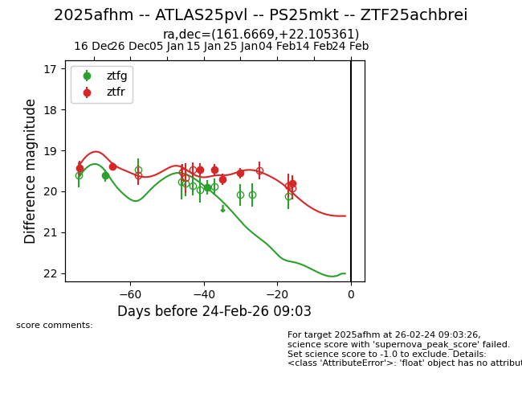
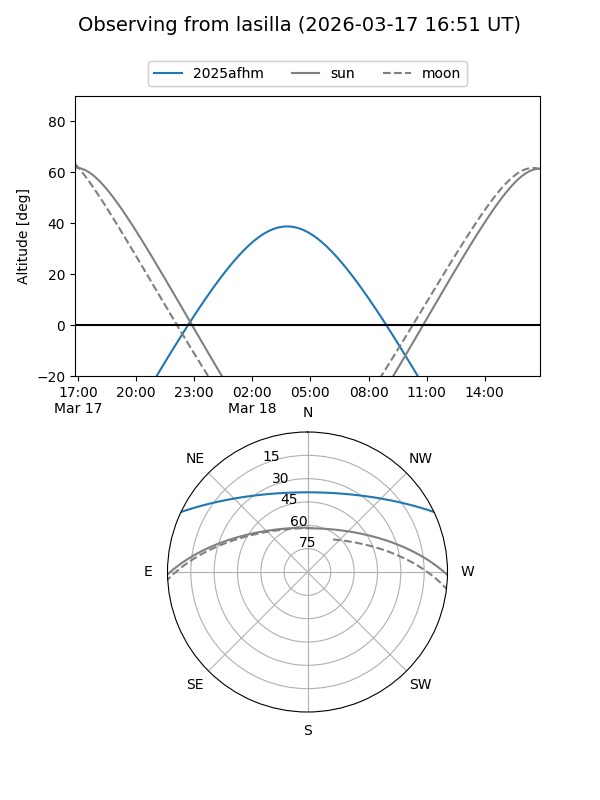
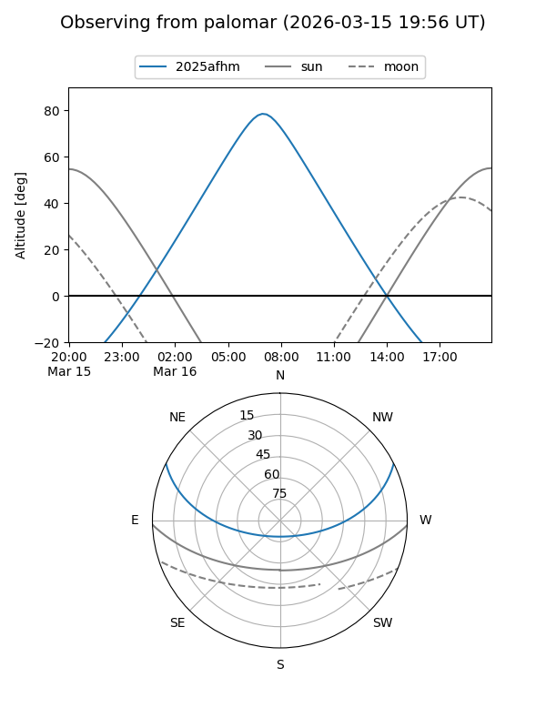
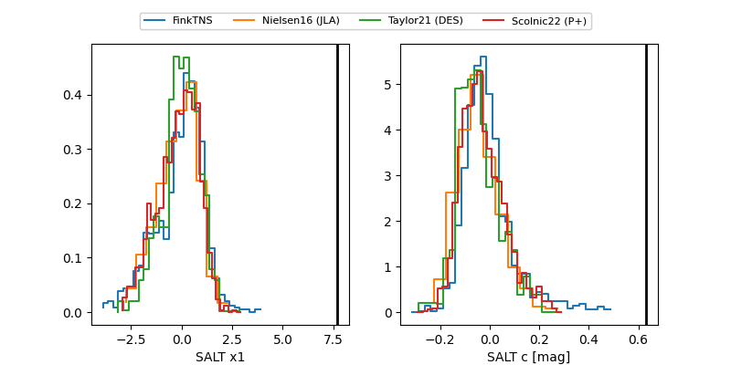

2025afhm
Target 2025afhm at 2025-12-19 12:57
Aliases and brokers:
FINK: fink-portal.org/ZTF25achbrei
Lasair: lasair-ztf.lsst.ac.uk/objects/ZTF25achbrei
ALeRCE: alerce.online/object/ZTF25achbrei
TNS: wis-tns.org/object/2025afhm
YSE: ziggy.ucolick.org/yse/transient_detail/2025afhm
alt names
ZTF25achbrei (ztf,fink_ztf)
2025afhm (tns,yse)
ATLAS25pvl (atlas)
Coordinates:
equatorial (ra, dec) = 161.6669,+22.10536
equatorial (HMS+DMS) = 10:46:40.05,+22:06:19.30
galactic (l, b) = (216.0903,+61.27693)
Flags:
Photometry:
last ztfg=19.61, ztfr=19.43
1 ztfg, 1 ztfr detections
Lightcurve

Visibility


Additional plots
